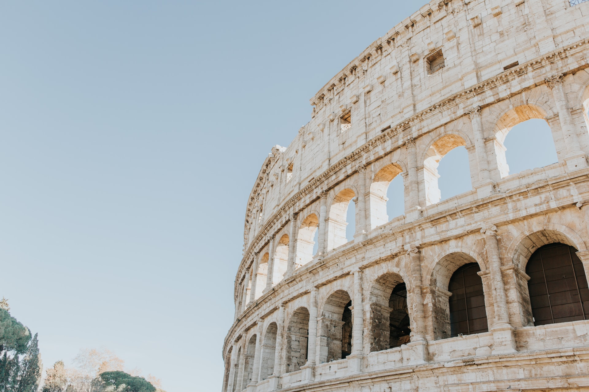

Italy officially the Italian Republic (Italian: Repubblica Italiana , is a country consisting of a peninsula delimited by the Alps and several islands surrounding it, whose territory largely coincides with the homonymous geographical region. Italy is located in the centre of the Mediterranean Sea, in Southern Europe, and is also considered part of Western Europe. A unitary parliamentary republic with Rome as its capital and largest city, the country covers a total area of 301,340 km2 and shares land borders with France, Switzerland, Austria, Slovenia, and the enclaved microstates of Vatican City and San Marino. Italy has a territorial exclave in Switzerland (Campione) and a maritime exclave in Tunisian waters (Lampedusa). With around 60 million inhabitants, Italy is the third-most populous member state of the European Union.Due to its central geographic location in Southern Europe and the Mediterranean, Italy has historically been home to myriad peoples and cultures. In addition to the various ancient peoples dispersed throughout what is now modern-day Italy, the most predominant being the Indo-European Italic peoples who gave the peninsula its name, beginning from the classical era, Phoenicians and Carthaginians founded colonies mostly in insular Italy, Greeks established settlements in the so-called Magna Graecia of Southern Italy, while Etruscans and Celts inhabited central and northern Italy respectively. An Italic tribe known as the Latins formed the Roman Kingdom in the 8th century BC, which eventually became a republic with a government of the Senate and the People. The Roman Republic initially conquered and assimilated its neighbours on the Italian peninsula, eventually expanding and conquering parts of Europe, North Africa and Asia. By the first century BC, the Roman Empire emerged as the dominant power in the Mediterranean Basin and became a leading cultural, political and religious centre, inaugurating the Pax Romana, a period of more than 200 years during which Italy's law, technology, economy, art, and literature developed.
